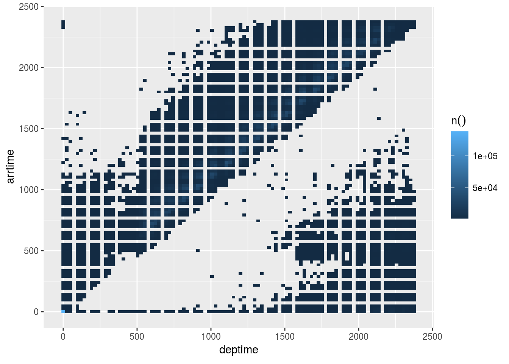
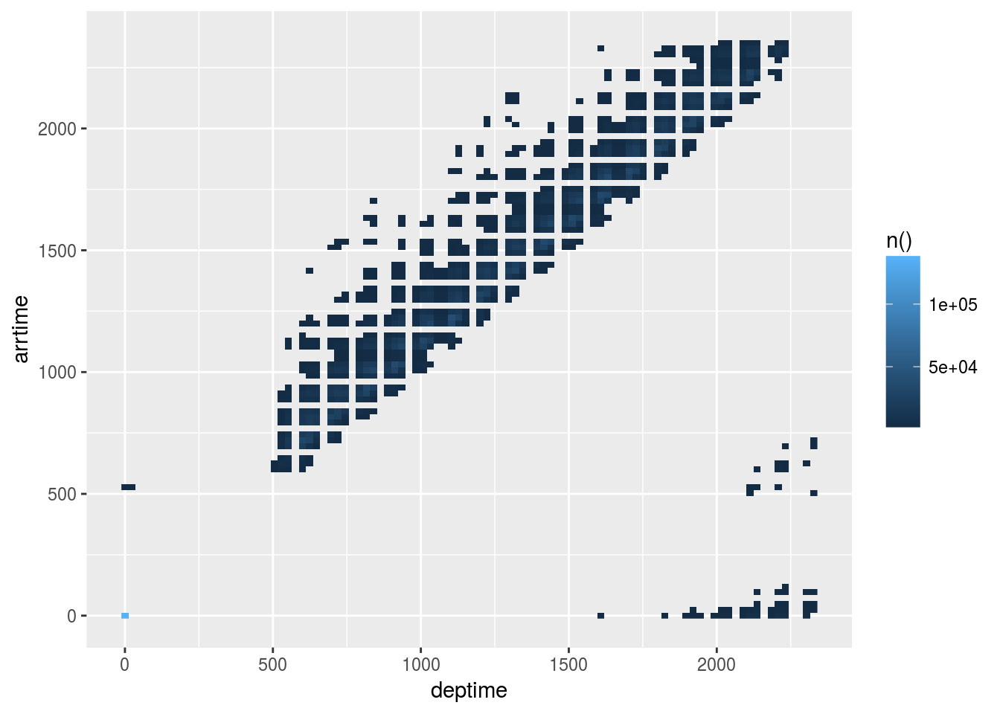

4 Data Visualizations
4.1 Simple plot
Practice pushing the calculations to the database
- Use
collect()bring back the aggregated results into a “pass-through” variable calledby_month
by_month <- flights %>%
group_by(month) %>%
tally() %>%
mutate(n = as.numeric(n)) %>%
collect()
head(by_month)## # A tibble: 6 x 2
## month n
## <dbl> <dbl>
## 1 10.0 556205
## 2 4.00 598126
## 3 12.0 544958
## 4 5.00 606293
## 5 2.00 569236
## 6 7.00 627931- Plot results using
ggplot2
library(ggplot2)
ggplot(by_month) +
geom_line(aes(x = month, y = n)) 
4.2 Plot in one code segment
Practice going from dplyr to ggplot2 without using pass-through variable, great for EDA
- Using the code from the previous section, create a single piped code set which also creates the plot
flights %>%
group_by(month) %>%
tally() %>%
mutate(n = as.numeric(n)) %>%
collect() %>%
ggplot() + # < Don't forget to switch to `+`
geom_line(aes(x = month, y = n)) 
- Change the aggregation to the average of
arrdelay. Tip: Usexas the summarize variable
flights %>%
group_by(month) %>%
summarise(x = mean(arrdelay, na.rm = TRUE)) %>%
mutate(x = as.numeric(x)) %>%
collect() %>%
ggplot() +
geom_line(aes(x = month, y = x)) 
- Plot the average distance. Copy the code from the previous exercise and change the variable
flights %>%
group_by(month) %>%
summarise(x = mean(distance, na.rm = TRUE)) %>%
mutate(x = as.numeric(x)) %>%
collect() %>%
ggplot() +
geom_line(aes(x = month, y = x)) 
4.3 Plot specific data segments
Combine skills from previous units to create more sophisticated plots
- Start with getting the top 5 carriers
flights %>%
group_by(uniquecarrier) %>%
tally() %>%
arrange(desc(n)) %>%
head(5) ## # Source: lazy query [?? x 2]
## # Database: postgres [rstudio_dev@localhost:/postgres]
## # Ordered by: desc(n)
## uniquecarrier n
## <chr> <S3: integer64>
## 1 WN 1201754
## 2 AA 604885
## 3 OO 567159
## 4 MQ 490693
## 5 US 453589- Pipe the top 5 carriers to a plot
flights %>%
group_by(uniquecarrier) %>%
tally() %>%
mutate(n = as.numeric(n)) %>%
arrange(desc(n)) %>%
head(5) %>%
collect() %>%
ggplot() +
geom_col(aes(x = uniquecarrier, y = n))
- Improve the plot’s look
flights %>%
group_by(uniquecarrier) %>%
tally() %>%
mutate(n = as.numeric(n)) %>%
arrange(desc(n)) %>%
head(5) %>%
collect() %>%
ggplot() + #Don't forget to switch to `+`
geom_col(aes(x = uniquecarrier, y = n, fill = n)) + #Add fill
theme(legend.position="none") + # Turn legend off
coord_flip() + # Rotate cols into rows
labs(title = "Top 5 Carriers",
subtitle = "Source: Datawarehouse",
x = "Carrier Name",
y = "# of Flights")
4.4 Two or more queries
Learn how to use pull() to pass a set of values to be used on a secondary query
- Use
pull()to get the top 5 carriers loaded in a vector
top5 <- flights %>%
group_by(uniquecarrier) %>%
tally() %>%
arrange(desc(n)) %>%
head(5) %>%
pull(uniquecarrier)
top5## [1] "WN" "AA" "OO" "MQ" "US"- Use
%in%to pass thetop5vector to a filter
flights %>%
filter(uniquecarrier %in% top5) ## # Source: lazy query [?? x 31]
## # Database: postgres [rstudio_dev@localhost:/postgres]
## flightid year month dayofmonth dayofweek deptime crsdeptime arrtime
## <int> <dbl> <dbl> <dbl> <dbl> <dbl> <dbl> <dbl>
## 1 3654480 2008 7.00 17.0 4.00 1915 1910 2027
## 2 3654481 2008 7.00 18.0 5.00 2003 2005 2201
## 3 3654482 2008 7.00 18.0 5.00 1327 1335 1906
## 4 3654483 2008 7.00 18.0 5.00 927 925 1501
## 5 3654484 2008 7.00 18.0 5.00 927 930 1205
## 6 3654485 2008 7.00 18.0 5.00 610 610 849
## 7 3654486 2008 7.00 18.0 5.00 1249 1255 1526
## 8 3654487 2008 7.00 18.0 5.00 2021 2020 2301
## 9 3654488 2008 7.00 18.0 5.00 1450 1445 1728
## 10 3654489 2008 7.00 18.0 5.00 1951 1935 2221
## # ... with more rows, and 23 more variables: crsarrtime <dbl>,
## # uniquecarrier <chr>, flightnum <dbl>, tailnum <chr>,
## # actualelapsedtime <dbl>, crselapsedtime <dbl>, airtime <dbl>,
## # arrdelay <dbl>, depdelay <dbl>, origin <chr>, dest <chr>,
## # distance <dbl>, taxiin <dbl>, taxiout <dbl>, cancelled <dbl>,
## # cancellationcode <chr>, diverted <dbl>, carrierdelay <dbl>,
## # weatherdelay <dbl>, nasdelay <dbl>, securitydelay <dbl>,
## # lateaircraftdelay <dbl>, score <int>- Group by carrier and get the average arrival delay
flights %>%
filter(uniquecarrier %in% top5) %>%
group_by(uniquecarrier) %>%
summarise(n = mean(arrdelay, na.rm = TRUE))## # Source: lazy query [?? x 2]
## # Database: postgres [rstudio_dev@localhost:/postgres]
## uniquecarrier n
## <chr> <dbl>
## 1 US 2.80
## 2 MQ 9.50
## 3 OO 6.44
## 4 WN 5.12
## 5 AA 12.2- Copy the final
ggplot()code from the Plot specific segment section. Update theylabs.
flights %>%
filter(uniquecarrier %in% top5) %>%
group_by(uniquecarrier) %>%
summarise(n = mean(arrdelay, na.rm = TRUE)) %>%
# From previous section ----------------------------------------------
collect() %>%
ggplot() + #Don't forget to switch to `+`
geom_col(aes(x = uniquecarrier, y = n, fill = n)) + #Add fill
theme(legend.position="none") + # Turn legend off
coord_flip() + # Rotate cols into rows
labs(title = "Top 5 Carriers",
subtitle = "Source: Datawarehouse",
x = "Carrier Name",
y = "Average Delay") 
4.5 Visualize using dbplot
Review how to use dbplot to make it easier to plot with databases
- Install and load
dbplot
library(dbplot)- Create a line plot using the helper function
dbplot_line()
flights %>%
dbplot_line(month)
- Update the plot’s labels
flights %>%
dbplot_line(month) +
labs(title = "Monthly flights",
x = "Month",
y = "Number of flights") 
4.6 Plot a different aggregation
dbplot allows for aggregate functions, other than record count, to be used for plotting
- Plot the average departure delay by day of week
flights %>%
dbplot_bar(dayofweek, mean(depdelay, na.rm = TRUE))
- Change the day numbers to day name labels
flights %>%
dbplot_bar(dayofweek, mean(depdelay, na.rm = TRUE)) +
scale_x_continuous(
labels = c("Mon", "Tue", "Wed", "Thu", "Fri", "Sat", "Sun"),
breaks = 1:7
)
4.7 Create a histogram
Use the package’s function to easily create a histogram
- Use the
dbplot_histogram()to build the histogram
flights %>%
dbplot_histogram(distance)
- Adjust the
binwidthto 300
flights %>%
dbplot_histogram(distance, binwidth = 300)
4.8 Raster plot
- Use a
dbplot_raster()to visualizedeptimeversusdepdelay
flights %>%
dbplot_raster(deptime, arrtime)
- Change the plot’s resolution to 500
flights %>%
dbplot_raster(deptime, arrtime, resolution = 500)
4.9 Using the calculate functions
- Use the
db_comptue_raster()function to get the underlying results that feed the plot
departure <- flights %>%
db_compute_raster(deptime, arrtime)
departure## # A tibble: 3,362 x 3
## deptime arrtime `n()`
## <dbl> <dbl> <dbl>
## 1 0 0 136345
## 2 1440 1584 11899
## 3 1440 1704 12455
## 4 1248 2208 20.0
## 5 744 2112 1.00
## 6 840 1344 1578
## 7 2112 936 34.0
## 8 936 2208 1.00
## 9 648 816 17227
## 10 336 528 42.0
## # ... with 3,352 more rows- Plot the results “manually”
departure %>%
filter(`n()` > 1000) %>%
ggplot() +
geom_raster(aes(x = deptime, y = arrtime, fill = `n()`))
4.10 Under the hood (II)
Review how dbplot pushes histogram and raster calculations to the database
- Use the
db_bin()command to see the resulting tidy eval formula
db_bin(field)## (((max(field, na.rm = TRUE) - min(field, na.rm = TRUE))/(30)) *
## ifelse((as.integer(floor(((field) - min(field, na.rm = TRUE))/((max(field,
## na.rm = TRUE) - min(field, na.rm = TRUE))/(30))))) ==
## (30), (as.integer(floor(((field) - min(field, na.rm = TRUE))/((max(field,
## na.rm = TRUE) - min(field, na.rm = TRUE))/(30))))) -
## 1, (as.integer(floor(((field) - min(field, na.rm = TRUE))/((max(field,
## na.rm = TRUE) - min(field, na.rm = TRUE))/(30))))))) +
## min(field, na.rm = TRUE)- Use
trasnlate_sql()andsimulate_odbc_postgresql()to see an example of what the resulting SQL statement looks like
translate_sql(!! db_bin(field), con = simulate_odbc_postgresql())## <SQL> (((max(`field`) OVER () - min(`field`) OVER ()) / (30.0)) * CASE WHEN ((CAST(FLOOR(((`field`) - min(`field`) OVER ()) / ((max(`field`) OVER () - min(`field`) OVER ()) / (30.0))) AS INTEGER)) = (30.0)) THEN ((CAST(FLOOR(((`field`) - min(`field`) OVER ()) / ((max(`field`) OVER () - min(`field`) OVER ()) / (30.0))) AS INTEGER)) - 1.0) WHEN NOT((CAST(FLOOR(((`field`) - min(`field`) OVER ()) / ((max(`field`) OVER () - min(`field`) OVER ()) / (30.0))) AS INTEGER)) = (30.0)) THEN ((CAST(FLOOR(((`field`) - min(`field`) OVER ()) / ((max(`field`) OVER () - min(`field`) OVER ()) / (30.0))) AS INTEGER))) END) + min(`field`) OVER ()- Disconnect from the database
dbDisconnect(con)